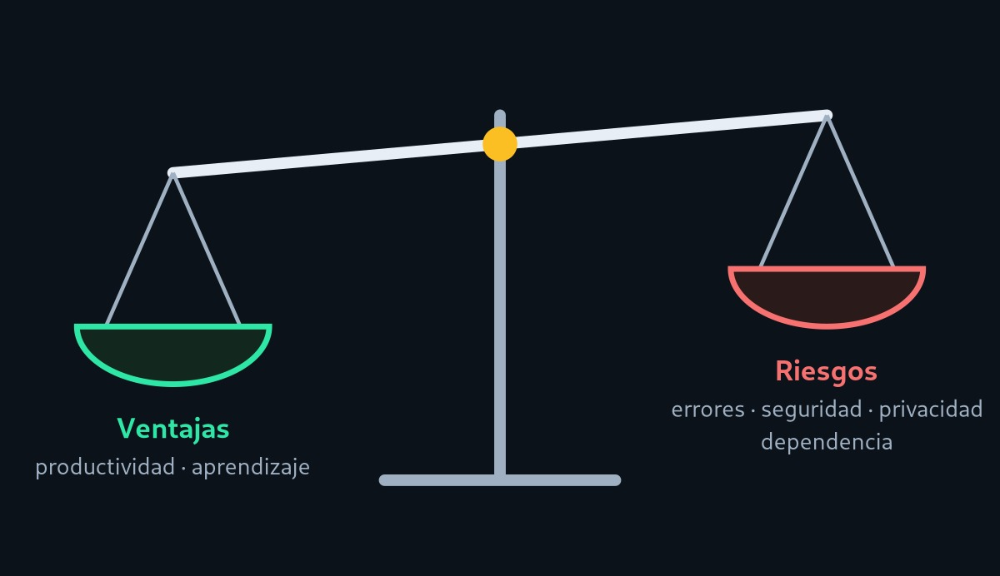

Ventajas y riesgos
La IA puede ahorrar tiempo y también introducir problemas difíciles de ver. Esta página contrasta ambos lados con evidencia de estudios.
Un balance, no un veredicto
Ningún estudio permite afirmar que la IA «siempre ayuda» o «siempre perjudica». Los resultados cambian según la tarea, la herramienta y la experiencia de quien la usa. Por eso conviene mirar las dos columnas.

Ventajas
- Productividad en tareas acotadas. En un experimento controlado, quienes usaron GitHub Copilot terminaron una tarea de programación un 55,8 % más rápido que el grupo de control [5].
- Menos trabajo repetitivo. Código estándar, conversiones y plantillas se generan en segundos.
- Apoyo al aprendizaje. Explica errores y conceptos con ejemplos adaptados a la duda concreta.
- Mejor cobertura de documentación y pruebas, tareas que a menudo se posponen.
- Prototipado rápido para comprobar una idea antes de invertir más tiempo.
Riesgos
- Errores plausibles. El código puede compilar y aun así ser incorrecto, o usar funciones inventadas.
- Seguridad. Un estudio sobre 89 escenarios halló que alrededor del 40 % de los programas generados por Copilot contenían vulnerabilidades [7].
- Falsa confianza. Participantes con un asistente escribieron código menos seguro y creían que era más seguro [8].
- Privacidad. Pegar claves, datos de clientes o código confidencial en un servicio externo puede exponerlos.
- Dependencia. Delegar siempre puede debilitar la capacidad de razonar y depurar por cuenta propia.
La productividad no es automática. En un ensayo con 16 desarrolladores experimentados que trabajaban en sus propios proyectos de código abierto, permitir herramientas de IA aumentó el tiempo de las tareas en un 19 %, aunque los participantes creían haber sido más rápidos [6]. La muestra es pequeña y las herramientas evolucionan, pero muestra que la percepción puede no coincidir con la medición.
Cómo reducir cada riesgo
| Riesgo | Ejemplo | Medida recomendada |
|---|---|---|
| Errores | Una función inventada o un caso límite ignorado. | Leer el código, ejecutar pruebas y revisar la documentación oficial. |
| Seguridad | Consultas SQL concatenadas, validaciones ausentes. | Revisión de seguridad, análisis estático y guías como la OWASP [9]. |
| Privacidad | Pegar una clave de API en el chat. | No compartir secretos ni datos personales; usar herramientas aprobadas por la organización. |
| Licencias | Fragmentos parecidos a código con licencia restrictiva. | Conocer la política de la herramienta y revisar el origen de bloques grandes. |
| Dependencia | No poder explicar el código que se entregó. | Intentar resolver primero, usar la IA para contrastar y explicar con palabras propias. |
Lista de uso responsable
Marca cada punto antes de incorporar código generado por IA a un proyecto.